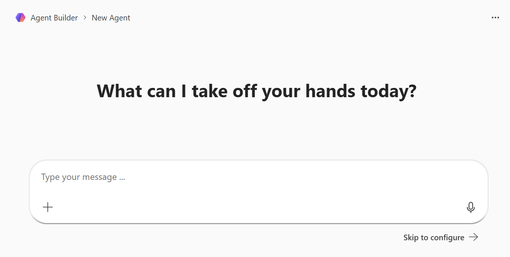
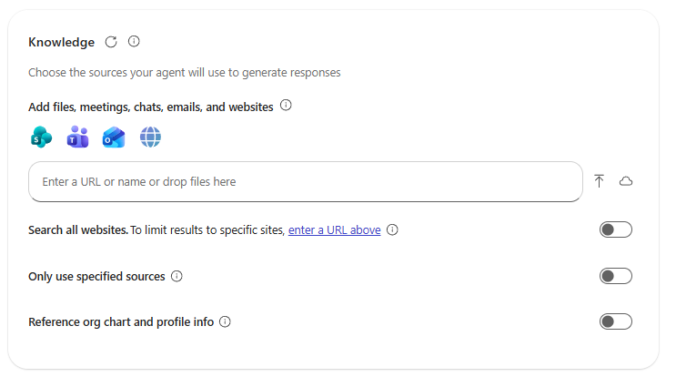

Ein einfacher Agent mit Agent Builder
Der einfache Agent entsteht in drei Schritten direkt in Microsoft 365 Copilot: anlegen, konfigurieren, Wissen anbinden und teilen – ohne Programmierung.

Links New agent wählen und den Agenten in Worten beschreiben – oder Skip to configure.

Im Tab Configure: Name, Modell, Instructions (Stufe 4), Knowledge, Capabilities, Starter prompts.

Bis 100 SharePoint-Dateien, 20 Uploads, 4 Websites. Der Agent beachtet die Berechtigungen des Nutzers.

Personen mit «Can chat» oder «Can edit» hinzufügen, Link kopieren oder organisationsweit freigeben.
Mehr lesen
Schritt 1: neuen Agenten anlegen
- Microsoft 365 Copilot öffnen: microsoft365.com/chat oder Teams (nicht mobil).
- Links New agent wählen.
- Den Agenten in Worten beschreiben – oder Skip to configure.
- Optional: eine Vorlage unter Start with a template.
Schritt 2: konfigurieren
| Feld (Configure) | Für unseren Anfragen-Agenten |
|---|---|
| Name, Description | «Anfragen zuweisen» · max. 30 bzw. 1’000 Zeichen |
| Model | Auto, Quick response oder Think deeper |
| Instructions | Stufe-4-Instruktion einfügen (siehe Prompt-Stufen) · max. 8’000 Zeichen |
| Knowledge | SharePoint-Ordner mit Zuständigkeitsliste und Merkblättern der Ämter; «Only use specified sources» an |
| Capabilities | «Create documents, charts, and code» an – damit gerechnet statt geschätzt wird, etwa bei Fristen |
| Starter prompts | «Bearbeite diese Anfrage: …» |
Testen im Tab Try it, dann Create. Der Agent ist zunächst nur für dich sichtbar; Änderungen gehen erst mit Update live.16
Schritt 3: Wissen anbinden und teilen
Knowledge: bis 100 SharePoint-Dateien, 20 Uploads, 4 Websites. Der Agent beachtet die Berechtigungen des Nutzers.17 Share: Personen mit «Can chat» oder «Can edit» hinzufügen, Link kopieren oder organisationsweit freigeben.17
Da Agent Builder keine eigenen Werkzeuge kennt, ersetzt du in der Stufe-4-Instruktion die Zeile zum Tool «Zuständigkeit_nachschlagen» durch «Schlage das Amt in der hinterlegten Zuständigkeitsliste nach». Agent Builder startet zudem nur im Chat: Du kopierst jede Anfrage selbst hinein.